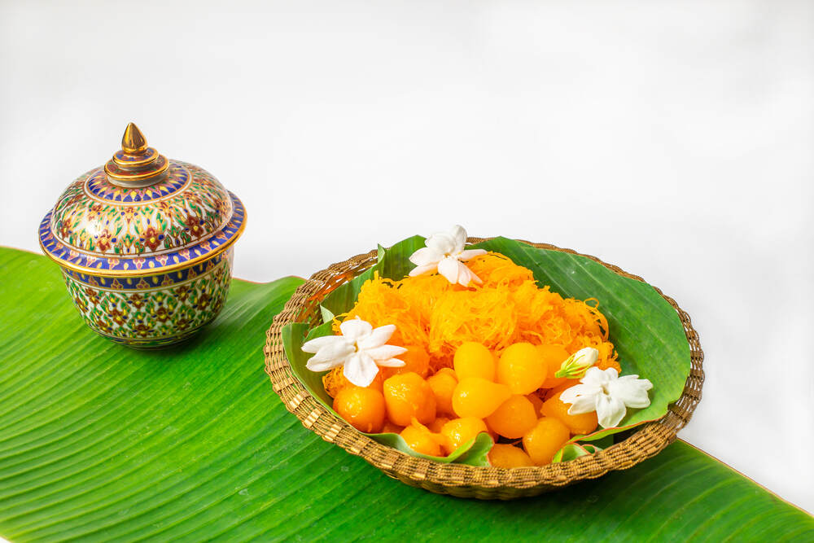
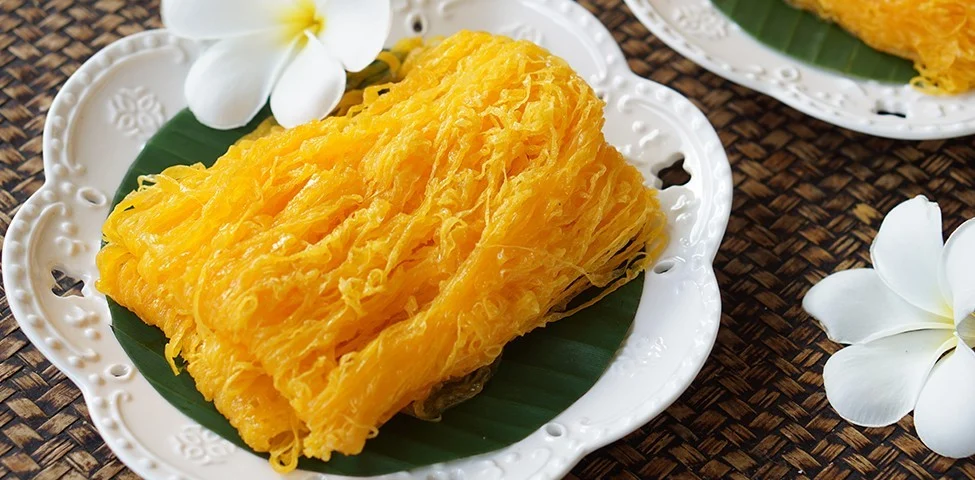
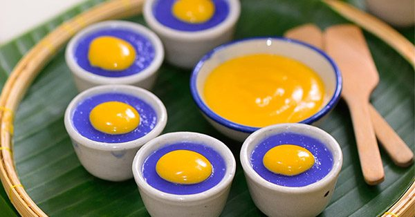
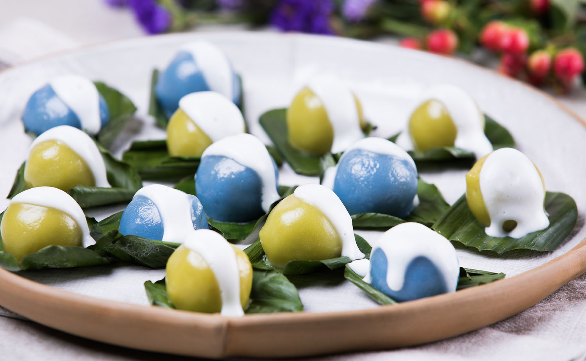

"ขนมหวานไทย"
"ทองหยอด"
"ทองหยอด" หนึ่งในห้าเสือขนมตระกูลทอง (ทองหยิบ, ทองหยอด, ฝอยทอง, เม็ดขนุน, ทองเอก)
ที่อยู่คู่สำรับไทยมาตั้งแต่สมัยอยุธยาตอนปลาย โดยได้รับอิทธิพลมาจากโปรตุเกสผ่านการสร้างสรรค์ของ "ท้าวทองกีบม้า" (มารี กีมาร์)
เนื่องจากทองหยอดมีรสหวานจัด คนโบราณจึงนิยมกินคู่กับ น้ำชาอุ่นๆ รสเข้มข้นหรือชาจีนขมๆ เพื่อตัดรส หรือในยุคนี้
การเอาทองหยอดไปแช่เย็นเจี๊ยบก่อนกิน หรือเอามาเป็นท็อปปิ้งทานคู่กับ ไอศกรีมกะทิสด บอกเลยว่าเข้ากันได้อย่างลงตัวสุดๆ

"ฝอยทอง"
"ฝอยทอง" อีกหนึ่งสุดยอดขนมไทยตระกูลทองที่รับอิทธิพลมาจากโปรตุเกส
(มาจากขนมที่ชื่อว่า Fios de Ovos แปลว่า เส้นใยจากไข่)
และถูกส่งต่อภูมิปัญญาการทำจนกลายเป็นเอกลักษณ์เฉพาะตัว
สัมผัสแรกคือความนุ่มละมุนและละเอียดอ่อนของเส้นไข่ที่ไม่ได้จับตัวเป็นก้อนแข็ง
แต่แยกเป็นเส้นสายละเมียดละไมอยู่ในปาก เคี้ยวแล้วมีความหนึบเบาๆ รสชาติหวานฉ่ำกำลังดี
และอบอวลไปด้วยกลิ่นหอมของน้ำลอยดอกมะลิสด ผสานกับกลิ่นไข่คั่วในน้ำเชื่อมที่หอมละมุนอย่างลงตัว

"ขนมบุหลันดั้นเมฆ (บุหลันลอยเลื่อน)"
ขนมชาววังที่ได้รับแรงบันดาลใจมาจากบทเพลงพระราชนิพนธ์ "บุหลันลอยเลื่อน"
ในรัชกาลที่ 2 หน้าตาจะเลียนแบบภาพของดวงจันทร์ที่กำลังลอยเด่นอยู่ท่ามกลางหมู่เมฆในเวลากลางคืน
หน้าตาและรสสัมผัส: ตัวแป้งด้านนอกจะใช้น้ำอัญชันผสมจนได้สีฟ้าครามเข้มเหมือนท้องฝ้า
นำไปนึ่งให้ตรงกลางบุ๋มลงไป จากนั้นหยอด "สังขยาไข่แดง" สีเหลืองนวลลงไปตรงกลางแทนดวงจันทร์
เวลาทานจะได้ความหนึบของแป้งอัญชัน ตัดกับความนุ่มละมุน หวานมัน ของสังขยาไข่แดง

"ซุปหน่อไม้"
ขนมมงคลโบราณที่ทำขึ้นเพื่อเลียนแบบ "ลูกจัน"
(ผลไม้ไทยโบราณที่สุกแล้วจะมีสีเหลืองทองและหอมมาก) ขนมชนิดนี้มีความหมายดี
นิยมใช้ในงานแต่งงานเพราะเชื่อว่าจะทำให้มีเสน่ห์ มีคนรักคนหลง
หน้าตาและรสสัมผัส: ทำจากแป้งผสมไข่แดง กะทิ และน้ำตาล กวนจนเนียนปั้นได้
จากนั้นนำมาปั้นเป็นรูปผลกลมแป้น มีร่องโดยรอบ และปั้นขั้วผลสีน้ำตาลติดไว้ด้านบน
แฝงกิมมิกความหอมด้วยการใส่ "ผงจันทน์เทศ" ลงไปในเนื้อขนม
ทำให้เวลาทานจะได้กลิ่นหอมละมุนเป็นเอกลักษณ์และรสชาติหวานมัน
.jpg)
"ขนมพระพาย"
ขนมโบราณที่มักใช้ในพิธีแต่งงานเช่นกัน ตัวขนมสื่อถึงความรักที่เหนียวแน่นและมั่นคง หน้าตาน่ารักและทำยากพอสมควร
หน้าตาและรสสัมผัส: ทำจากแป้งข้าวเหนียวนวดกับน้ำสมุนไพรสีต่างๆ (อัญชัน, ใบเตย) จนเหนียวนุ่ม นำมาห่อไส้
"ถั่วเขียวกวน" รสหวานละมุน แล้วนำไปนึ่งบนใบตอง แร็ปความอร่อยขั้นสุดท้ายด้วยการราด "หัวกะทิสด" เค็มๆ มันๆ
ด้านบน เวลาเคี้ยวจะมีความเหนียวหนึบของแป้ง ผสานความมันของกะทิและหวานนัวจากไส้ถั่ว
